Contents
Demonstrate the use of FFMaintenanceSim to analyze disturbance effects.
Initialize simulation data structure
s = FFMaintenanceTests;
The following cases are stored:
=========================================================
default'
iplf to cipe reconfig
iplf to cipe reconfig low noise
iplf to cipe reconfig high noise
iplf to cipe reconfig full dist
iplf to cipe reconfig full dist low noise
iplf to cipe reconfig full dist high noise
differential drag demo
=========================================================
Set initial state to 500 m leader follower
sma = s.el0(1);
s.dEl0 = zeros(1,6);
s.dEl0(2) = .5/sma;
Set formations goals to be 250 m relative ellipse
s.goals.y0 = 0;
s.goals.aE = .25;
s.goals.beta = 0;
s.goals.zInc = .1;
s.goals.zLan = -.1;
Simulate
d = FFMaintenanceSim(s);
5.0 orbits remaining ... should be done in 0 hours, 1 minutes, 18 seconds
4.0 orbits remaining ... should be done in 0 hours, 0 minutes, 1 seconds
3.0 orbits remaining ... should be done in 0 hours, 0 minutes, 0 seconds
2.0 orbits remaining ... should be done in 0 hours, 0 minutes, 0 seconds
1.0 orbits remaining ... should be done in 0 hours, 0 minutes, 0 seconds
Annual Delta-V: 306.3087 m/s
Add noise
s.noise(3) = 1e-1;
s.noise(4) = 1e-2;
Simulate with noise
d2 = FFMaintenanceSim(s);
5.0 orbits remaining ... should be done in 0 hours, 0 minutes, 17 seconds
4.0 orbits remaining ... should be done in 0 hours, 0 minutes, 0 seconds
3.0 orbits remaining ... should be done in 0 hours, 0 minutes, 0 seconds
2.0 orbits remaining ... should be done in 0 hours, 0 minutes, 0 seconds
1.0 orbits remaining ... should be done in 0 hours, 0 minutes, 0 seconds
Annual Delta-V: 368.0576 m/s
Add differential drag
s.noise(1:4) = 0;
s.distOpt(2) = 1;
s.area
s.area(2) = 10;
ans =
5 5
Simulate with differential drag
d3 = FFMaintenanceSim(s);
5.0 orbits remaining ... should be done in 0 hours, 0 minutes, 29 seconds
4.0 orbits remaining ... should be done in 0 hours, 0 minutes, 0 seconds
3.0 orbits remaining ... should be done in 0 hours, 0 minutes, 0 seconds
2.0 orbits remaining ... should be done in 0 hours, 0 minutes, 0 seconds
1.0 orbits remaining ... should be done in 0 hours, 0 minutes, 0 seconds
Annual Delta-V: 363.5326 m/s
View results...
FFMaintenancePlotter( d );
figure
stairs(d.dVt,cumsum(Mag(d.dV))*1e3), hold on,
stairs(d2.dVt,cumsum(Mag(d2.dV))*1e3,'g'),
stairs(d3.dVt,cumsum(Mag(d3.dV))*1e3,'r'),
legend('Reconfigure','Reconfigure with Noise','Reconfigure with Drag','location','best')
xlabel('Time [sec]'), ylabel('Delta-V [m/s]')
title('Cumulative Delta-V')
grid on
figure
title('Tracking Error')
plot(d.time,Mag(d.rH_des-d.rH)*1e3), hold on
plot(d2.time,Mag(d2.rH_des-d2.rH)*1e3,'g')
plot(d3.time,Mag(d3.rH_des-d3.rH)*1e3,'r')
legend('Reconfigure','Reconfigure with Noise','Reconfigure with Drag','location','best')
xlabel('Time [sec]'), ylabel('Pos. Error [m]')
grid on

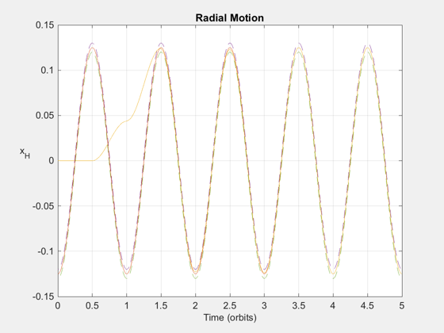 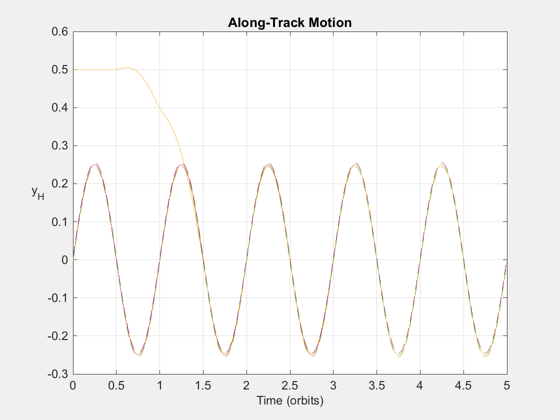 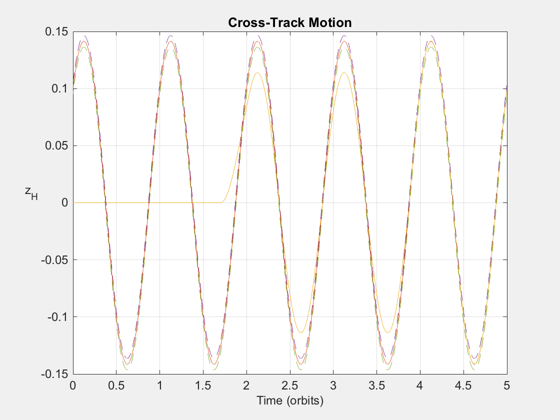 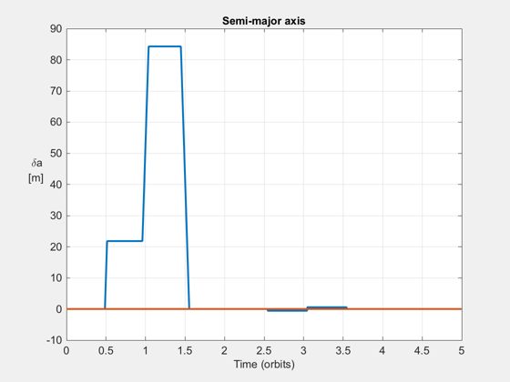 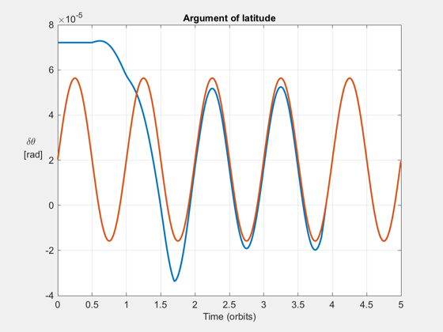 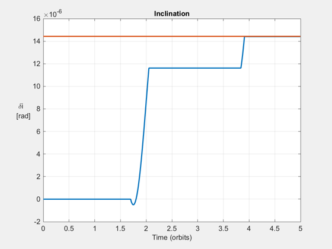 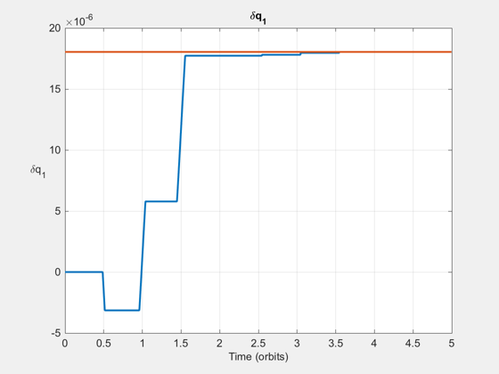 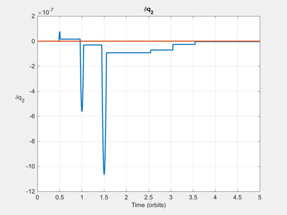 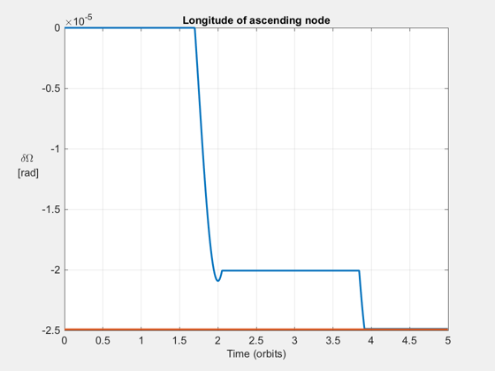 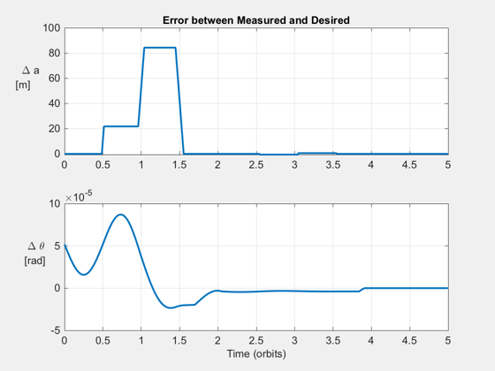 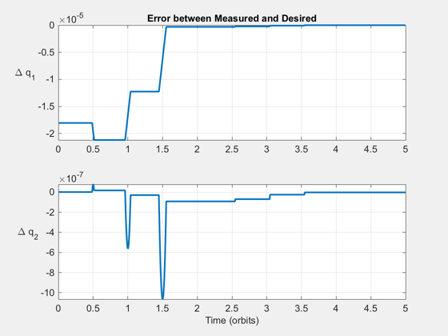 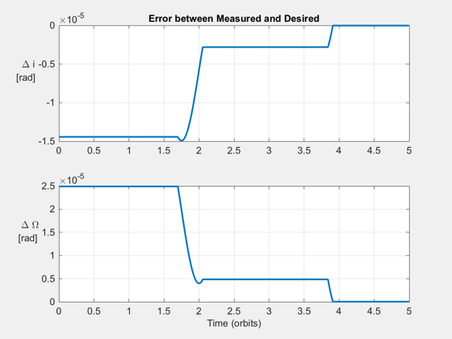 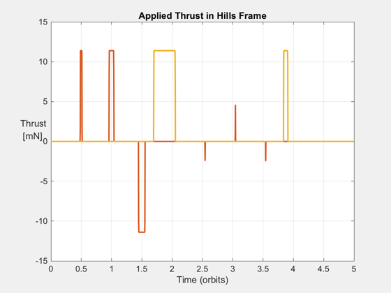 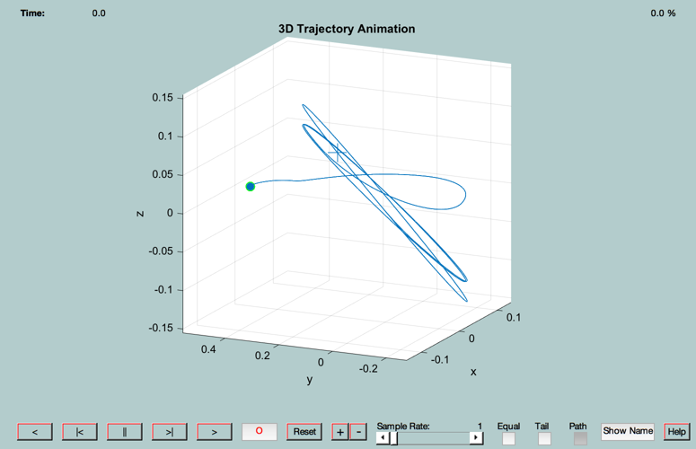 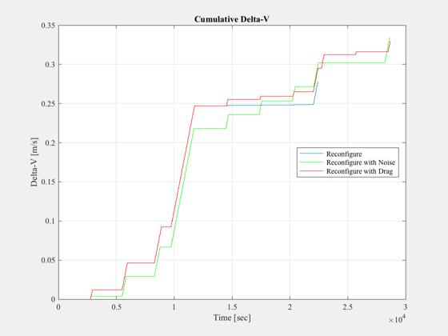 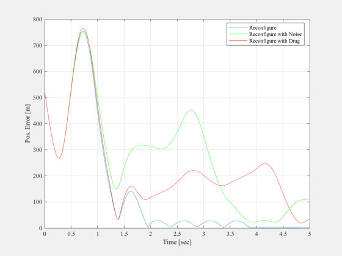